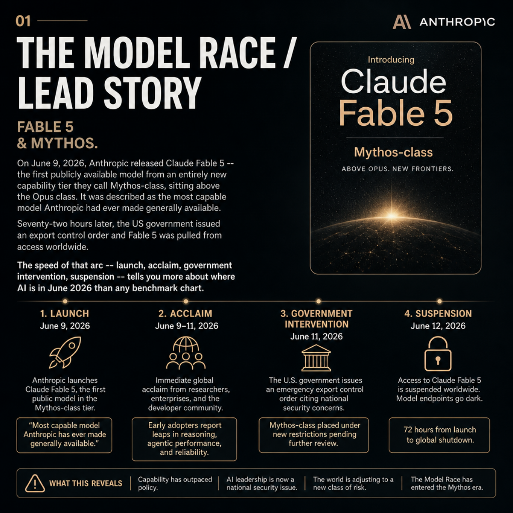

FABLE 5 & MYTHOS.
On June 9, 2026, Anthropic released Claude Fable 5 -- its first public Mythos-class model. Seventy-two hours later the US government issued an export order and it was pulled worldwide.

assets/images/story-01.png.OPEN QUESTION: If the most capable public AI model can be suspended by government order within 72 hours of launch, who actually controls the frontier?